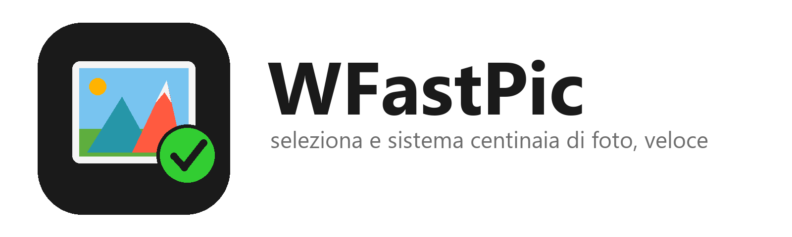
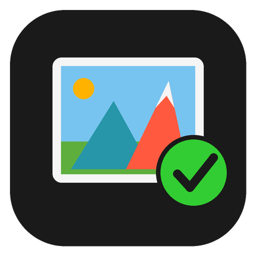

<!doctype html>
<!--
  Generatore dell'icona e del logo di WFastPic (vedi genera-icone.ps1).
  Parte dalle immagini "base" (icona-base.png, logo-base.png: dopo la prima versione dell'icona, con il
  vecchio sole tondo) e vi disegna sopra il sole-obiettivo: cielo piatto #78C4F0 a coprire il vecchio sole,
  poi un disco con anello e diaframma esagonale, circondato da raggi come le lamelle di un obiettivo.
  Parametri: ?m=icona&s=256 (icona quadrata di lato s px)  oppure  ?m=logo (1600x480).
-->
<html>
<head>
<meta charset="utf-8">
<style>
  html, body { margin: 0; background: transparent; overflow: hidden; }
  #tela { position: relative; transform-origin: 0 0; }
  #tela > * { position: absolute; left: 0; top: 0; }
</style>
</head>
<body>
<div id="tela"></div>
<script>
  const q = new URLSearchParams(location.search);
  const modo = q.get('m') || 'icona';
  const lato = +(q.get('s') || 512);

  // --- il sole-obiettivo, in coordinate dell'icona 512x512 ---
  const SOLE = { cx: 176, cy: 184 };
  function raggi() {
    let s = '';
    for (let i = 0; i < 16; i++) {
      const lungo = i % 2 === 0;
      const a = (i * 22.5) * Math.PI / 180;
      const r1 = 31, r2 = lungo ? 48 : 39.5, w = lungo ? 6.4 : 5;
      const ux = Math.sin(a), uy = -Math.cos(a);        // direzione del raggio
      const px = -uy, py = ux;                          // perpendicolare
      const p = (r, d) => `${(ux * r + px * d).toFixed(2)},${(uy * r + py * d).toFixed(2)}`;
      s += `<polygon points="${p(r1, -w / 2)} ${p(r2, 0)} ${p(r1, w / 2)}" fill="#FFB300"/>`;
    }
    return s;
  }
  function esagono(r) {
    return Array.from({ length: 6 }, (_, i) => {
      const a = (i * 60 + 30) * Math.PI / 180;
      return `${(Math.cos(a) * r).toFixed(2)},${(Math.sin(a) * r).toFixed(2)}`;
    }).join(' ');
  }
  const disegnoSole = `
    <circle cx="167" cy="177" r="30" fill="#78C4F0"/>
    <g transform="translate(${SOLE.cx} ${SOLE.cy})">
      ${raggi()}
      <circle r="26.5" fill="#FFB300" stroke="#E08A00" stroke-width="3"/>
      <circle r="17.5" fill="#FFD152"/>
      <polygon points="${esagono(9.5)}" fill="none" stroke="#E08A00" stroke-width="1.6" stroke-linejoin="round"/>
      <circle cx="-6.5" cy="-7.5" r="4.2" fill="#fff" opacity=".85"/>
    </g>`;

  const tela = document.getElementById('tela');
  if (modo === 'logo') {
    // Nel logo l'icona occupa x 76..465, y 45..435; nell'icona 512 il quadrato scuro va da 20 a 492.
    const k = 389.5 / 472, tx = 76 - 20 * k, ty = 45 - 20 * k;
    tela.style.width = '1600px'; tela.style.height = '480px';
    tela.innerHTML = `
      <svg width="1600" height="480" viewBox="0 0 1600 480"><g transform="translate(${tx} ${ty}) scale(${k})">${disegnoSole}</g></svg>`;
  } else {
    tela.style.width = '512px'; tela.style.height = '512px';
    tela.style.transform = `scale(${lato / 512})`;
    tela.innerHTML = `
      <svg width="512" height="512" viewBox="0 0 512 512">${disegnoSole}</svg>`;
  }
</script>
</body>
</html>
